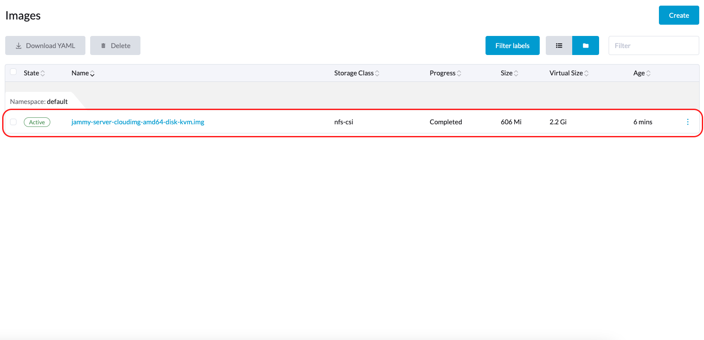

Suporte a armazenamento de terceiros
SUSE Virtualization suporta o provisionamento de volumes raiz e volumes de dados usando drivers externos de Interface de Armazenamento de Contêiner (CSI). Essa melhoria permite que você selecione drivers que atendam a requisitos específicos, como otimização de desempenho ou integração perfeita com soluções de armazenamento interno existentes.
A equipe SUSE Virtualization validou os seguintes drivers CSI:
-
Longhorn V2 Data Engine:
driver.longhorn.io -
LVM:
lvm.driver.harvesterhci.io -
NFS:
nfs.csi.k8s.io -
Rook (Dispositivo de Blocos RADOS):
rook-ceph.rbd.csi.ceph.com
Esses drivers CSI validados têm as seguintes capacidades:
| Solução de Armazenamento | Imagem de VM | Disco Raiz de VM | Disco de Dados de VM | Exportação de Volume para Imagem de VM | Gerador de Template de VM | Migração ao Vivo de VM | Instantâneo de VM | Backup de VM |
|---|---|---|---|---|---|---|---|---|
Longhorn V2 Data Engine |
✔ |
✔ |
✔ |
✔ |
✔ |
✔ |
✔ |
✔ |
LVM |
✔ |
✔ |
✔ |
✔ |
✔ |
✖ |
✔ |
✖ |
NFS |
✔ |
✔ |
✔ |
✔ |
✔ |
✔ |
✖ |
✖ |
Rook (Dispositivo de Blocos RADOS) |
✔ |
✔ |
✔ |
✔ |
✔ |
✔ |
✔ |
✖ |
|
O suporte a armazenamento de terceiros equivale ao suporte ao provisionamento de volumes raiz e volumes de dados, utilizando drivers externos de interface de armazenamento de contêiner (CSI). Isso significa que os fornecedores de armazenamento podem validar seus dispositivos de armazenamento com SUSE Virtualization para garantir maior interoperabilidade. Você pode encontrar informações sobre soluções de armazenamento de nível empresarial que são certificadas como compatíveis com SUSE Virtualization na documentação SUSE Rancher Prime, que é acessível através do SUSE Customer Center. |
Pré-requisitos
Para permitir que SUSE Virtualization funcione bem, utilize drivers CSI que suportem as seguintes capacidades:
-
Expansão de volume (redimensionamento online)
-
Criação de instantâneo (instantâneos de volume e de máquina virtual)
-
Clonagem (clones de volume e de máquina virtual)
-
Uso de volumes Read-Write-Many (RWX) para Migração ao Vivo
Crie um cluster SUSE Virtualization
O sistema operacional de SUSE Virtualization segue um design imutável, o que significa que a maioria dos arquivos do SO reverte ao seu estado pré-configurado após uma reinicialização. Portanto, pode ser necessário realizar configurações adicionais antes de instalar o cluster SUSE Virtualization para drivers CSI de terceiros.
Alguns drivers CSI requerem caminhos persistentes adicionais no host. Você pode adicionar esses caminhos a os.persistent_state_paths.
Alguns drivers CSI requerem pacotes de software adicionais no host. Você pode instalar esses pacotes com os.after_install_chroot_commands.
|
Fazer upgrade do SUSE Virtualization faz com que as alterações no SO na fase |
Instale o driver CSI
Após a instalação do cluster SUSE Virtualization ser concluída, consulte Como posso acessar o arquivo kubeconfig? para obter o kubeconfig do cluster.
Com o kubeconfig do cluster SUSE Virtualization, você pode instalar os drivers CSI de terceiros no cluster seguindo as instruções de instalação para cada driver CSI. Você também deve consultar a documentação do driver CSI para criar o StorageClass e o VolumeSnapshotClass no cluster SUSE Virtualization.
Configure o cluster SUSE Virtualization.
Antes de poder usar os recursos de Backup & Snapshot do SUSE Virtualization, você precisa efetuar algumas configurações essenciais por meio da opção SUSE Virtualizationcsi-driver-config. Siga estas etapas para fazer essas configurações:
-
Faça login na interface do SUSE Virtualization, em seguida, navegue até Configurações → Avançadas.
-
Encontre e selecione csi-driver-config, e então selecione ⋮ → Editar Configuração para acessar as opções de configuração.
-
Defina o Provisioner para o driver CSI de terceiros nas configurações.
-
Em seguida, configure o Nome da Classe de Snapshot de Volume. Esta configuração aponta para o nome do
VolumeSnapshotClassusado para criar instantâneos de volume ou instantâneos de VM.

|
O backup atualmente funciona apenas com os seguintes:
Se você estiver usando outros provedores de armazenamento, pode pular a configuração do Nome da Classe de Instantâneo de Backup de Volume. Para mais informações, veja Compatibilidade de Backup de Máquina Virtual. Se o provisionador do StorageClass não estiver na lista de provisionadores com modos de acesso e volume padrão do CDI, você deve anotar o StorageClass com |
Use o driver CSI.
Uma vez que o driver CSI esteja instalado e o cluster SUSE Virtualization esteja configurado, uma solução de armazenamento externa pode ser usada em tarefas que envolvem gerenciamento de armazenamento.
Criação de imagem de máquina virtual
Você pode usar uma solução de armazenamento externa para armazenar e gerenciar imagens de máquinas virtuais.
Ao fazer o upload de uma imagem de máquina virtual usando a interface SUSE Virtualization (Imagem → Criar), você deve selecionar a Classe de Armazenamento para a solução de armazenamento externa na aba Armazenamento. No exemplo a seguir, a Classe de Armazenamento é nfs-csi.

SUSE Virtualization armazena a imagem criada na solução de armazenamento externa.

Criação de máquina virtual
Suas máquinas virtuais podem usar volumes raiz e de dados em armazenamento externo.
Ao criar uma máquina virtual usando a interface SUSE Virtualization (Máquina Virtual → Criar), você deve realizar as seguintes ações na aba Volumes:
-
Selecione uma imagem de máquina virtual armazenada na solução de armazenamento externa e, em seguida, configure as configurações necessárias.
-
Adicione um volume de dados.

No exemplo a seguir, o volume raiz é criado usando NFS, e o volume de dados é criado usando o Longhorn V2 Data Engine.

Criação de volumes
Você pode criar volumes em sua solução de armazenamento externa.
Ao criar um volume usando a interface SUSE Virtualization (Volumes → Criar), você deve realizar as seguintes ações:
-
Classe de Armazenamento: Selecione a Classe de Armazenamento de destino (por exemplo, nfs-csi).
-
Modo de Volume: Selecione o modo de volume correspondente (por exemplo, Sistema de Arquivos).

Tópicos avançados
Perfis de armazenamento
Agora você pode usar a API CDI para criar perfis de armazenamento personalizados que simplificam a definição de volumes de dados. Os perfis de armazenamento permitem que múltiplos volumes de dados compartilhem as mesmas configurações de provisionamento.
A seguir, um exemplo de um perfil de armazenamento LVM:
apiVersion: cdi.kubevirt.io/v1beta1
kind: StorageProfile
metadata:
name: lvm-node-1-striped
spec:
claimPropertySets:
- accessModes:
- ReadWriteOnce
volumeMode: Block
status:
claimPropertySets:
- accessModes:
- ReadWriteOnce
volumeMode: Block
cloneStrategy: snapshot
dataImportCronSourceFormat: pvc
provisioner: lvm.driver.harvesterhci.io
snapshotClass: lvm-snapshot
storageClass: lvm-node-1-stripedVocê pode definir os campos para substituir a configuração padrão. Para mais informações, consulte Perfis de Armazenamento na documentação do CDI.
|
Evite alterar o perfil de armazenamento ou o CDI diretamente. Em vez disso, permita que o controlador SUSE Virtualization sincronize e persista a configuração do perfil de armazenamento através do uso de anotações CDI. |
Limitações
-
O suporte a backup é atualmente limitado a SUSE Storage volumes. SUSE Virtualization não consegue criar backups de volumes em armazenamento externo.
-
Há uma limitação no CDI que impede SUSE Virtualization de converter PVCs anexados em imagens de máquinas virtuais. Antes de exportar um volume em armazenamento externo, certifique-se de que o PVC não esteja anexado a cargas de trabalho. Isso impede que a imagem resultante fique presa no estado Exportando.

Implantação do driver NFS CSI
|
Você pode implantar o driver NFS CSI apenas quando o servidor NFS já estiver instalado e em execução.
Se o servidor já estiver em execução, verifique a opção |
-
Instale o driver usando o gráfico Helm
csi-driver-nfs.$ helm repo add csi-driver-nfs https://raw.githubusercontent.com/kubernetes-csi/csi-driver-nfs/master/charts $ helm install csi-driver-nfs csi-driver-nfs/csi-driver-nfs --namespace kube-system --version v4.10.0 -
Crie a StorageClass para NFS.
Para mais informações sobre parâmetros, consulte Parâmetros do Driver: Uso da Classe de Armazenamento na documentação do Driver NFS CSI do Kubernetes.
apiVersion: storage.k8s.io/v1 kind: StorageClass metadata: name: nfs-csi provisioner: nfs.csi.k8s.io parameters: server: <your-nfs-server-ip> share: <your-nfs-share> # csi.storage.k8s.io/provisioner-secret is only needed for providing mountOptions in DeleteVolume # csi.storage.k8s.io/provisioner-secret-name: "mount-options" # csi.storage.k8s.io/provisioner-secret-namespace: "default" reclaimPolicy: Delete volumeBindingMode: Immediate allowVolumeExpansion: true mountOptions: - nfsvers=4.2Uma vez criada, você pode usar a StorageClass para criar imagens de máquinas virtuais, volumes raiz e volumes de dados.
Problemas conhecidos
1. Loop infinito de download de imagem
O processo de download da imagem entra em um loop sem fim quando a StorageClass da imagem utiliza o driver LVM CSI. Esse problema está relacionado ao volume temporário, que é criado pelo CDI e é usado para armazenar temporariamente os dados da imagem. Quando o problema existe em seu ambiente, você pode encontrar as seguintes mensagens de erro nos logs do pod importer-prime-xxx:
E0418 01:59:51.843459 1 util.go:98] Unable to write file from dataReader: write /scratch/tmpimage: no space left on device
E0418 01:59:51.861235 1 data-processor.go:243] write /scratch/tmpimage: no space left on device
unable to write to file
kubevirt.io/containerized-data-importer/pkg/importer.streamDataToFile
/home/abuild/rpmbuild/BUILD/go/src/kubevirt.io/containerized-data-importer/pkg/importer/util.go:101
kubevirt.io/containerized-data-importer/pkg/importer.(*HTTPDataSource).Transfer
/home/abuild/rpmbuild/BUILD/go/src/kubevirt.io/containerized-data-importer/pkg/importer/http-datasource.go:162
kubevirt.io/containerized-data-importer/pkg/importer.(*DataProcessor).initDefaultPhases.func2
/home/abuild/rpmbuild/BUILD/go/src/kubevirt.io/containerized-data-importer/pkg/importer/data-processor.go:173
kubevirt.io/containerized-data-importer/pkg/importer.(*DataProcessor).ProcessDataWithPause
/home/abuild/rpmbuild/BUILD/go/src/kubevirt.io/containerized-data-importer/pkg/importer/data-processor.go:240
kubevirt.io/containerized-data-importer/pkg/importer.(*DataProcessor).ProcessData
/home/abuild/rpmbuild/BUILD/go/src/kubevirt.io/containerized-data-importer/pkg/importer/data-processor.go:149
main.handleImport
/home/abuild/rpmbuild/BUILD/go/src/kubevirt.io/containerized-data-importer/cmd/cdi-importer/importer.go:188
main.main
/home/abuild/rpmbuild/BUILD/go/src/kubevirt.io/containerized-data-importer/cmd/cdi-importer/importer.go:148
runtime.mainA mensagem no space left on device indica que o sistema de arquivos criado usando o volume scratch não é suficiente para armazenar os dados da imagem. O CDI cria o volume scratch com base no tamanho do volume de destino, mas algum espaço é perdido para a sobrecarga do sistema de arquivos. O valor padrão de sobrecarga é 0.055 (equivalente a 5,5%), o que é suficiente na maioria dos casos. No entanto, se o tamanho da imagem for menor que 1 GB e seu tamanho virtual estiver muito próximo do tamanho da imagem, a sobrecarga padrão provavelmente será insuficiente.
A solução alternativa é aumentar a sobrecarga do sistema de arquivos para 20% usando o seguinte comando:
# kubectl patch cdi cdi --type=merge -p '{"spec":{"config":{"filesystemOverhead":{"global":"0.2"}}}}'A imagem deve ser baixada uma vez que a sobrecarga do sistema de arquivos seja aumentada.
|
Aumentar o valor da sobrecarga não afeta o tamanho do PVC da imagem. O volume scratch é excluído após a importação da imagem. |
Problema relacionado: #7993 (Veja este comentário.)
2. Suporte a múltiplos caminhos
O serviço multipathd está desativado em SUSE Virtualization por padrão. No entanto, certos CSIs de terceiros podem exigir que você ative o serviço.
Após instalar SUSE Virtualization, você pode ativar e iniciar multipathd fazendo login em cada nó do cluster e executando os seguintes comandos:
systemctl enable multipathd
systemctl start multipathdAlternativamente, você pode criar um arquivo SUSE® Rancher Prime: OS Manager CloudInit no diretório /oem em cada host (por exemplo, /oem/99-start-multipathd.yaml) com o seguinte conteúdo:
stages:
default:
- name: "start multipathd"
systemctl:
enable:
- multipathd
start:
- multipathdEsse processo pode ser automatizado em todo o Harvester cluster usando um CloudInit CRD.
apiVersion: node.harvesterhci.io/v1beta1
kind: CloudInit
metadata:
name: start-mutlitpathd
spec:
matchSelector:
harvesterhci.io/managed: "true"
filename: 99-start-mutlitpathd
contents: |
stages:
default:
- name: "start multipathd"
systemctl:
enable:
- multipathd
start:
- multipathd
paused: false